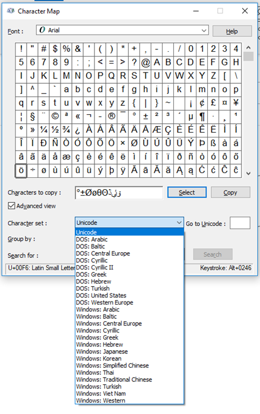

Using the Shortname
The Shortname is a Windows way of dealing with non-ASCII characters and long file names and paths.
First, let’s create some filenames with bad character inside bad folder names. We will use the character map to generate some commonly used Unicode, non-ASCII characters. We will even use some Arabic characters. See Table 1. Note, that the files with long names longer than 260 characters require special care to generate and is not something a user can do easily. Figure 2 shows the error message windows give you when you try to create a file/path name that is too long.

Table 1 — Files with non‑ASCII characters and their short (8.3) names
| File # | Long Name | Long Name Length | Short Name | Comments |
|---|---|---|---|---|
| 1 | C:Temp\example long file name with non ASCII character 1 - °±ØøθΘﮆﯶﯙ.txt | 73 | C:Temp\EXAMPL~1.TXT | |
| 2 | C:Temp\Long Folder Name with non ASCII characters 1 - °±ØøθΘﮆﯶﯙ\example long file name with non ASCII character 2 - °±ØøθΘﮆﯶﯙ.txt | 130 | C:Temp\LONGFO~1\EXAMPL~1.TXT | |
| 3 | C:Temp\Long Folder Name with non ASCII characters 1 - °±ØøθΘﮆﯶﯙ\example long file name with non ASCII character 3 - °±ØøθΘﮆﯶﯙ.txt | 130 | C:Temp\LONGFO~1\EXAMPL~2.TXT | |
| 4 | C:Temp\Long Folder Name with non ASCII characters 1 - °±ØøθΘﮆﯶﯙ\Long Folder Name with non ASCII characters 2 - °±ØøθΘﮆﯶﯙ\example long file name with non ASCII character 4 - °±ØøθΘﮆﯶﯙ - Copy.txt | 194 | C:Temp\LONGFO~1\LONGFO~1\EXAMPL~2.TXT | |
| 5 | C:Temp\Long Folder Name with non ASCII characters 1 - °±ØøθΘﮆﯶﯙ\Long Folder Name with non ASCII characters 2 - °±ØøθΘﮆﯶﯙ\example long file name with non ASCII character 4 - °±ØøθΘﮆﯶﯙ.txt | 187 | C:Temp\LONGFO~1\LONGFO~1\EXAMPL~1.TXT | |
| 6 | C:Temp\Long Folder Name with non ASCII characters 1 - °±ØøθΘﮆﯶﯙ\Long Folder Name with non ASCII characters 2 - °±ØøθΘﮆﯶﯙ\Long Folder Name with non ASCII characters 3 - °±ØøθΘﮆﯶﯙ\example long file name with non ASCII character 5 - °±ØøθΘﮆﯶﯙ.txt | 244 | C:Temp\LONGFO~1\LONGFO~1\LONGFO~1\EXAMPL~1.TXT | |
| 7 | C:Temp\Long Folder Name with non ASCII characters 1 - °±ØøθΘﮆﯶﯙ\Long Folder Name with non ASCII characters 2 - °±ØøθΘﮆﯶﯙ\Long Folder Name with non ASCII characters 3 - °±ØøθΘﮆﯶﯙ\Long Folder Name with non ASCII characters 4 - °±ØøθΘﮆﯶﯙ\example long file name with non ASCII character 6 - °±ØøθΘﮆﯶﯙ.txt | 301 | C:Temp\LONGFO~1\LONGFO~1\LONGFO~1\LONGFO~1\EXAMPL~1.TXT | Paths longer than 260 characters are trouble. I don't understand when you can work with them and when you can't. |
| 8 | C:Temp\Long Folder Name with non ASCII characters 1 - °±ØøθΘﮆﯶﯙ\Long Folder Name with non ASCII characters 2 - °±ØøθΘﮆﯶﯙ\Long Folder Name with non ASCII characters 3 - °±ØøθΘﮆﯶﯙ\Long Folder Name with non ASCII characters 4 - °±ØøθΘﮆﯶﯙ\Long Folder Name with non ASCII characters 5 - °±ØøθΘﮆﯶﯙ\example long file name with non ASCII character 7 - °±ØøθΘﮆﯶﯙ.txt | 358 | C:Temp\LONGFO~1\LONGFO~1\LONGFO~1\LONGFO~1\LONGFO~1\EXAMPL~1.TXT | Paths longer than 260 characters are trouble. I don't understand when you can work with them and when you can't. |

If you use the command dir /s /b example\*.txt then you get the block of text shown in Block 1. Note that the dir did not return the 8th file path. This is because it has a local folder path longer than 260 characters.
C:\Temp\example long file name with non ASCII character 1 - °±ØøθΘﮆﯶﯙ.txt
C:\Temp\Long Folder Name with non ASCII characters 1 - °±ØøθΘﮆﯶﯙ\example long file name with non ASCII character 2 - °±ØøθΘﮆﯶﯙ.txt
C:\Temp\Long Folder Name with non ASCII characters 1 - °±ØøθΘﮆﯶﯙ\example long file name with non ASCII character 3 - °±ØøθΘﮆﯶﯙ.txt
C:\Temp\Long Folder Name with non ASCII characters 1 - °±ØøθΘﮆﯶﯙ\Long Folder Name with non ASCII characters 2 - °±ØøθΘﮆﯶﯙ\example long file name with non ASCII character 4 - °±ØøθΘﮆﯶﯙ - Copy.txt
C:\Temp\Long Folder Name with non ASCII characters 1 - °±ØøθΘﮆﯶﯙ\Long Folder Name with non ASCII characters 2 - °±ØøθΘﮆﯶﯙ\example long file name with non ASCII character 4 - °±ØøθΘﮆﯶﯙ.txt
C:\Temp\Long Folder Name with non ASCII characters 1 - °±ØøθΘﮆﯶﯙ\Long Folder Name with non ASCII characters 2 - °±ØøθΘﮆﯶﯙ\Long Folder Name with non ASCII characters 3 - °±ØøθΘﮆﯶﯙ\example long file name with non ASCII character 5 - °±ØøθΘﮆﯶﯙ.txt
C:\Temp\Long Folder Name with non ASCII characters 1 - °±ØøθΘﮆﯶﯙ\Long Folder Name with non ASCII characters 2 - °±ØøθΘﮆﯶﯙ\Long Folder Name with non ASCII characters 3 - °±ØøθΘﮆﯶﯙ\Long Folder Name with non ASCII characters 4 - °±ØøθΘﮆﯶﯙ\example long file name with non ASCII character 6 - °±ØøθΘﮆﯶﯙ.txtBlock 1
If instead we dump the command to a text file dir /s /b example\*.txt > filelist.txt then we have a problem as shown in Block 2. Some of the non-ASCII characters become question mark characters. This makes working with these files just about unworkable through text files.
C:\Temp\example long file name with non ASCII character 1 - øñOo?é???.txt
C:\Temp\Long Folder Name with non ASCII characters 1 - øñOo?é???\example long file name with non ASCII character 2 - øñOo?é???.txt
C:\Temp\Long Folder Name with non ASCII characters 1 - øñOo?é???\example long file name with non ASCII character 3 - øñOo?é???.txt
C:\Temp\Long Folder Name with non ASCII characters 1 - øñOo?é???\Long Folder Name with non ASCII characters 2 - øñOo?é???\example long file name with non ASCII character 4 - øñOo?é??? - Copy.txt
C:\Temp\Long Folder Name with non ASCII characters 1 - øñOo?é???\Long Folder Name with non ASCII characters 2 - øñOo?é???\example long file name with non ASCII character 4 - øñOo?é???.txt
C:\Temp\Long Folder Name with non ASCII characters 1 - øñOo?é???\Long Folder Name with non ASCII characters 2 - øñOo?é???\Long Folder Name with non ASCII characters 3 - øñOo?é???\example long file name with non ASCII character 5 - øñOo?é???.txt
C:\Temp\Long Folder Name with non ASCII characters 1 - øñOo?é???\Long Folder Name with non ASCII characters 2 - øñOo?é???\Long Folder Name with non ASCII characters 3 - øñOo?é???\Long Folder Name with non ASCII characters 4 - øñOo?é???\example long file name with non ASCII character 6 - øñOo?é???.txtBlock 2
In VBA, the short name is not something that VBA functions are setup to work with. Instead, if you use the del shortname through a shell command, then you can delete the file(s). For instance executing the command in Block 3 deletes all 8 files from Table 1 and Block 4 shows that the files no longer exist, which includes the files with long paths. Since I did not obtain the long folder path of file 8 via dir, I am not sure how you would get its short name except for manually generating it.
del C:\Temp\EXAMPL~1.TXT C:\Temp\LONGFO~1\EXAMPL~1.TXT C:\Temp\LONGFO~1\EXAMPL~2.TXT C:\Temp\LONGFO~1\LONGFO~1\EXAMPL~2.TXT C:\Temp\LONGFO~1\LONGFO~1\EXAMPL~1.TXT C:\Temp\LONGFO~1\LONGFO~1\LONGFO~1\EXAMPL~1.TXT C:\Temp\LONGFO~1\LONGFO~1\LONGFO~1\LONGFO~1\EXAMPL~1.TXT C:\Temp\LONGFO~1\LONGFO~1\LONGFO~1\LONGFO~1\LONGFO~1\EXAMPL~1.TXTBlock 3
C:\Temp>dir /s /b example*.txt
File Not FoundBlock 4
CC BY-SA 4.0 Jason H. Nicholson. Last modified: November 18, 2025.
Website built with Franklin.jl and the Julia programming language.